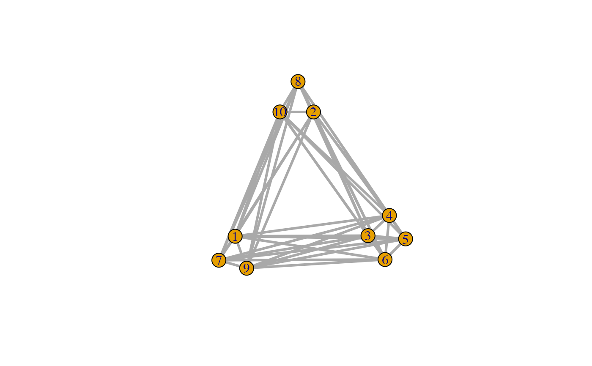
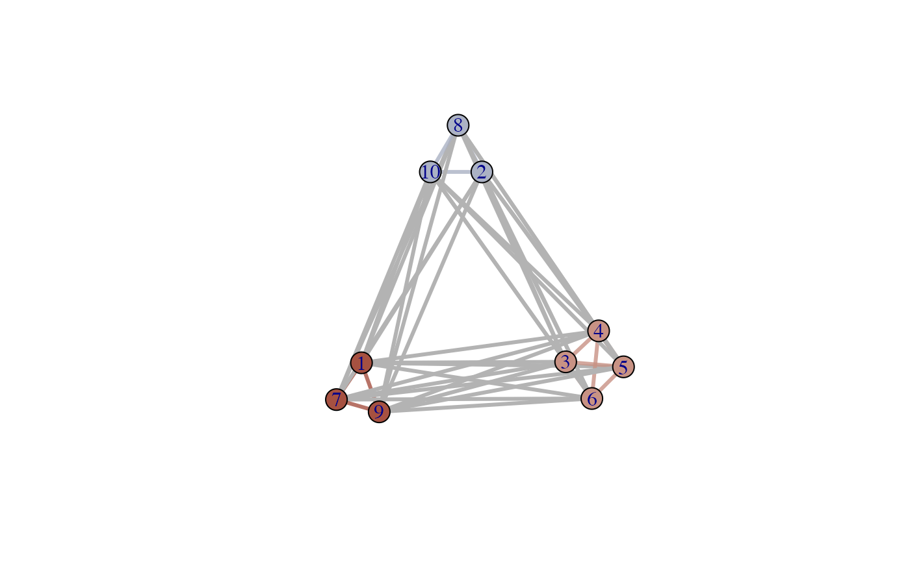

Use a layout which takes a weights
plotNET_groupWeight( g, groups, weigth.within = 100, weight.between = 1, preserve.weight.within = FALSE, preserve.weight.between = FALSE, doPlot = FALSE, returnOnlyWeights = TRUE )
Arguments
| g | An igraph object whose edges ( |
|---|---|
| groups | A named numeric vector with |
| weigth.within | The weight within a group ( |
| weight.between | The weight within a group ( |
| preserve.weight.within | If |
| preserve.weight.between | If |
| doPlot | Plot the igraph object |
| returnOnlyWeights | Do not return the graph, just the weights. If |
Value
A numeric vector with length(get.edgelist(g)) edge weights that will cluster groups defined in membership if a layout is used that can handle edge weights as a parameter (see examples).
See also
Other tools for plotting networks:
plotNET_BA(),
plotNET_SW(),
plotNET_groupColour(),
plotNET_prep()
Examples
# Make a star graph and let the odd numbers cluster together library(igraph) g <-make_full_graph(10, directed=FALSE) E(g)$width <- 3 V(g)$name <- paste(1:10) membership <- rep(c(1,2),5) names(membership) <- V(g)$name E(g)$weight <- plotNET_groupWeight(g,membership,1000,10) g$layout=layout.fruchterman.reingold(g,weights=E(g)$weight) plot(g)# Make 3 groups by changing the 'membership' vector membership[3:6] <- 3 names(membership) <- V(g)$name E(g)$weight <- plotNET_groupWeight(g,membership,1000,10) g$layout=layout.fruchterman.reingold(g,weights=E(g)$weight) plot(g)# Use plotNET_groupColour for Vertex and Edge group colours g <- plotNET_groupColour(g, membership, colourE=TRUE)